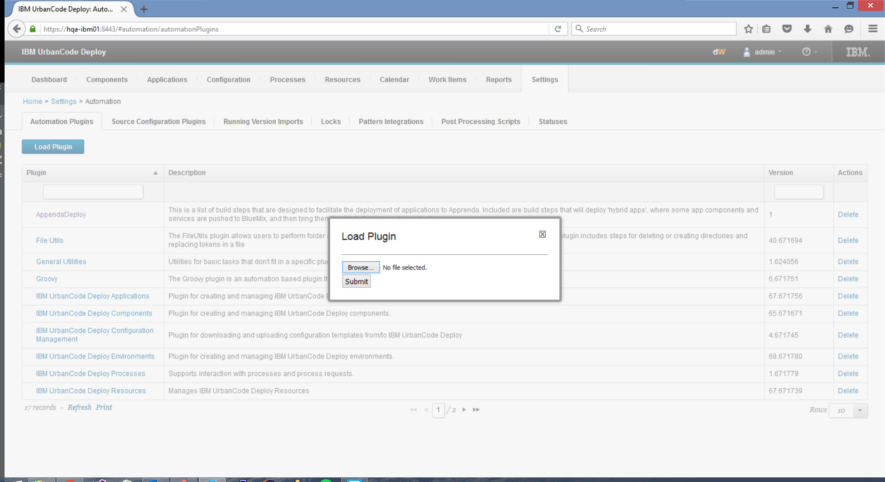
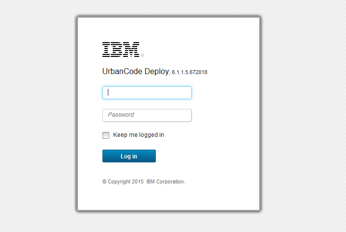
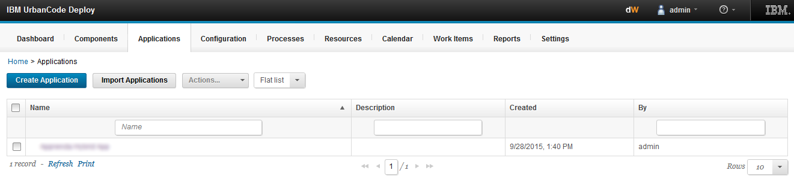
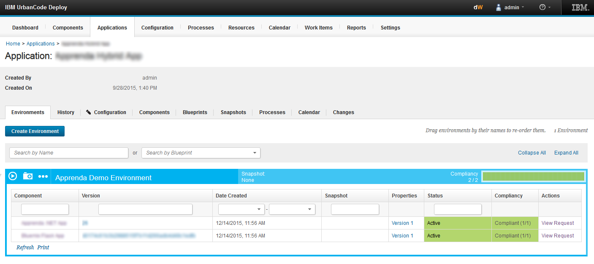
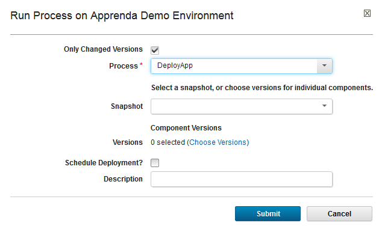
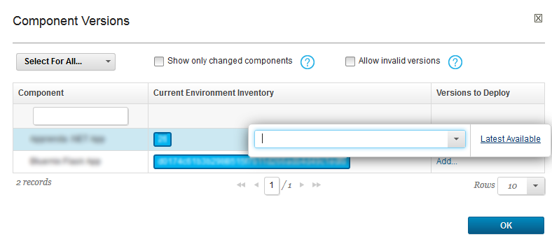
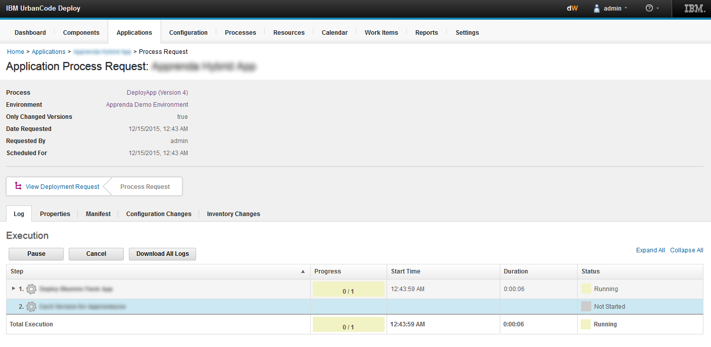

IBM Urbancode Deploy provides the ability for IT organizations to be able to continuously deliver their applications to production in a timely, secure, efficient manner. This integration extends that functionality and provides IT to target the Apprenda platform as an endpoint.
Copyright (c) 2015 Apprenda Inc.
Permission is hereby granted, free of charge, to any person obtaining a copy of this software and associated documentation files (the "Software"), to deal in the Software without restriction, including without limitation the rights to use, copy, modify, merge, publish, distribute, sublicense, and/or sell copies of the Software, and to permit persons to whom the Software is furnished to do so, subject to the following conditions:
The above copyright notice and this permission notice shall be included in all copies or substantial portions of the Software.
THE SOFTWARE IS PROVIDED "AS IS", WITHOUT WARRANTY OF ANY KIND, EXPRESS OR IMPLIED, INCLUDING BUT NOT LIMITED TO THE WARRANTIES OF MERCHANTABILITY, FITNESS FOR A PARTICULAR PURPOSE AND NONINFRINGEMENT. IN NO EVENT SHALL THE AUTHORS OR COPYRIGHT HOLDERS BE LIABLE FOR ANY CLAIM, DAMAGES OR OTHER LIABILITY, WHETHER IN AN ACTION OF CONTRACT, TORT OR OTHERWISE, ARISING FROM, OUT OF OR IN CONNECTION WITH THE SOFTWARE OR THE USE OR OTHER DEALINGS IN THE SOFTWARE.
Installation is straightforward. Download the zip file from the Apprenda GitHub page. It will contain everything you need to get started.
After logging in, navigate to Settings -> Automation Plugins. From there, select Load Plugin. You will be presented with this screen:
Upload the zip file, and click Submit.
As a prerequisite, you must have a component created and have the source configuration setup. For assistance on this, please refer to your Urbancode Documentation.
Typically, component processes are where application deployment steps are heavily used. At the application level you will be deploying multiple components, each with their own definition. This is where the Apprenda build steps will be used.
First, navigate to the Urbancode installation and log in. We're using admin credentials here, but make sure you are using an ID that has the necessary permissions to create processes, alter applications and components.
Navigate to the Applications tab, and find the application you created in the previous section.
Select which environment you wish to deploy to (here, the Apprenda Demo Environment), and then click on the circled right arrow to begin the process.
A window will appear asking you to select the application process. Select the one that will run the component processes that include the Apprenda build steps.
Click on Choose Versions, and select the Latest Available version for each component you want to deploy.
Click on OK, and you will progress to the next screen which shows the deployment in action.
Urbancode provides the ability for an organization to specify environment variables that can be used across multiple build steps and processes. The Apprenda automation plugin takes advantage of this, and puts the environment variables at the resource level. Please refer to the Urbancode Deploy documentation for assistance on how to setup environment variables. Here's a list of environment variables that, depending on your internal requirements, will require setup:
| Variable Name | Description |
| ${p:resource/Apprenda_URL} | The root URL of the Apprenda instance. |
| ${p:resource/Apprenda_SSF} | If you are using a self-signed certificate for testing purposes, check this box. Do NOT use for Production. |
| ${p:resource/Apprenda_User} | The name of the account that will be used for deployments. Do not set this if you plan on using >1 account in your deployments. |
| ${p:resource/Apprenda_PW} | The corresponding password that will be used for deployments. Do not set this if you plan on using >1 account in your deployments. |
| ${p:resource/Apprenda_Tenant} | The name of the developer team that will be deploying applications. Set this only if you want to specify a default developer team. |
| ${p:resource/Bluemix_API} | The url of the Bluemix endpoint, as of press time this should be set to https://api.ng.bluemix.net. If you are using a proxy, set the URL here. |
| ${p:resource/Bluemix_User} | The name of the Bluemix user. Do not set this if you plan on using >1 Bluemix account in your deployments. |
| ${p:resource/Bluemix_PW} | The corresponding password. Do not set this if you plan on using >1 Bluemix account in your deployments. |
| ${p:resource/Bluemix_ORG} | The name of the Bluemix organization. Set this only if you want to specify a default organization, or if this is a single-organization entity. |
| ${p:resource/Bluemix_SPACE} | The name of the Bluemix Space in which to perform the respective build action. Set this only if you want to specify a default space. |
Note: for all build step parameters, required ones are in bold.
Objective: Deploys the application to Apprenda, creating it if it does not exist.
Parameters:
| Name | Description | Default Value |
| ApprendaURL | The root URL of the Apprenda instance. | ${p:resource/Apprenda_URL} |
| SelfSignedFlag | Check this is your are using a development environment. Do NOT enable in production. | ${p:resource/Apprenda_SSF} |
| ApprendaUser | The developer account username associated with the platform. | ${p:resource/Apprenda_User} |
| ApprendaPassword | The respective password. | ${p:resource/Apprenda_PW} |
| TenantAlias | The name of your development team. | ${p:resource/Apprenda_Tenant} |
| AppAlias | The alias of the application. If an application with this alias does not exist, this plugin will create a new application. | None |
| ArchiveName | Relative path to the name of the archive being deployed to Apprenda. | None |
| AutoIncrementVersion | Set to true if you want to force the creation of a new version. Restrictions apply, see Usage. | False |
| Stage | The target stage of the deployment. Valid values are definition, sandbox, and published. | Definition |
Objective: Deploys the application to Apprenda, creating it if it does not exist.
Parameters:
| Name | Description | Default Value |
| api | The target Bluemix system, eg. https://api.ng.bluemix.net. | ${p:resource/Bluemix_API} |
| user | The developer account username associated with the platform. | ${p:resource/Bluemix_User} |
| password | The developer account password associated with the platform. | ${p:resource/Bluemix_PW} |
| selfsigned | Use only if you require to bypass security due to a self signed certificate | False |
| org | The name of the organization where the application will be deployed. | ${p:resource/Bluemix_ORG} |
| space | The name of the space within the organization that the application will be deployed. | ${p:resource/Bluemix_SPACE} |
| appName | The name of the application to use when deployed. Required if not using a manifest. | None |
| manifest | If you are using a manifest with the deployment, specify here. | None |
| domain | If you are using a custom domain, set it here. | None |
| subdomain | Sets a unique subdomain route for the application. | None |
| instances | The number of instances you wish to create during the deployment. Use with other Bluemix services to take advantage of auto-scaling, elasticity, etc. | 1 |
| memory | The amount of memory each instance of the application should provision. | None (uses default Bluemix settings) |
| disk | The amount of local stage should be allocated for each instance of the application. | None (uses default Bluemix settings) |
| buildpack | Specify the buildpack you want the application to use for its runtime. | None |
| path | If not using the root working directory, specify the path to the root folder of the application. | None (uses CWD) |
| stack | Specify the OS stack the application will use. | None (uses default Bluemix settings) |
| timeout | Specify the length of time that Bluemix should wait after your app deployment for the application to come online. | None (uses Bluemix default) |
| nostart | Check if you wish your application to not start after deployment. | False |
| noroute | Check if you wish your application to not have a route created and bound to it's runtime. Note: your application will be unavailable for use after deployment until a route is mapped. | False |
| nomanifest | Check if you want the process to bypass searching for a manifest to pick up. Ideal for when using a custom deployment. | False |
| nohostname | Check if you do not wish for a hostname to be created for the application. | False |
| randomroute | Check if you would rather have a random route created and mapped to the application than specifying a named route. | False |
| pathToCF | This is the path to the CF CLI on the agent, which is used to deploy the application to Bluemix. This is usually covered by an environment variable. | ${p:resource/Bluemix_CFPATH} |
Objective: Creates a new Bluemix service.
Parameters:
| Name | Description | Default Value |
| api | The target Bluemix system, eg. https://api.ng.bluemix.net. | ${p:resource/Bluemix_API} |
| user | The developer account username associated with the platform. | ${p:resource/Bluemix_User} |
| password | The developer account password associated with the platform. | ${p:resource/Bluemix_PW} |
| selfsigned | Use only if you require to bypass security due to a self signed certificate | False |
| org | The name of the organization where the application will be deployed. | ${p:resource/Bluemix_ORG} |
| space | The name of the space within the organization that the application will be deployed. | ${p:resource/Bluemix_SPACE} |
| name | User-friendly name of the service. | None |
| service | Name of the bluemix service you wish to provision. | None |
| plan | This is the service plan you wish to use when provisioning the service. | None |
| pathToCF | This is the agent's path to execute the Bluemix CLI | None |
Objective: Makes the Apprenda-bound application aware of components and services in Bluemix.
Parameters:
| Name | Description | Default Value |
| api | The target Bluemix system, eg. https://api.ng.bluemix.net. | ${p:resource/Bluemix_API} |
| user | The developer account username associated with the platform. | ${p:resource/Bluemix_User} |
| password | The developer account password associated with the platform. | ${p:resource/Bluemix_PW} |
| selfsigned | Use only if you require to bypass security due to a self signed certificate | False |
| org | The name of the organization where the application will be deployed. | ${p:resource/Bluemix_ORG} |
| space | The name of the space within the organization that the application will be deployed. | ${p:resource/Bluemix_SPACE} |
| component | This is the user-friendly name of the component or service currently provisioned in Bluemix. | None |
| componentType | Specify whether the component is an application or service. | None |
| ApprendaArchiveLocation | This root directory of the apprenda application, where we'll start searching for configuration files. | .\ |
| pathToCF | Sets the agent path to execute the Bluemix CLI. | None |
Objective: This build step will set the instance count of the application. Depending on how many instances are running at that given time, Apprenda will either create or remove instances to achieve this count.
Parameters:
| Name | Description | Default Value |
| ApprendaURL | The root URL of the Apprenda instance. | ${p:resource/Apprenda_URL} |
| SelfSignedFlag | Check this is your are using a development environment. Do NOT enable in production. | ${p:resource/Apprenda_SSF} |
| ApprendaUser | The developer account username associated with the platform. | ${p:resource/Apprenda_User} |
| ApprendaPassword | The respective password. | ${p:resource/Apprenda_PW} |
| TenantAlias | The name of your development team. | ${p:resource/Apprenda_Tenant} |
| AppAlias | The alias of the application. If an application with this alias does not exist, this step will fail. | None |
| InstanceCount | The instance count of the application. | None |